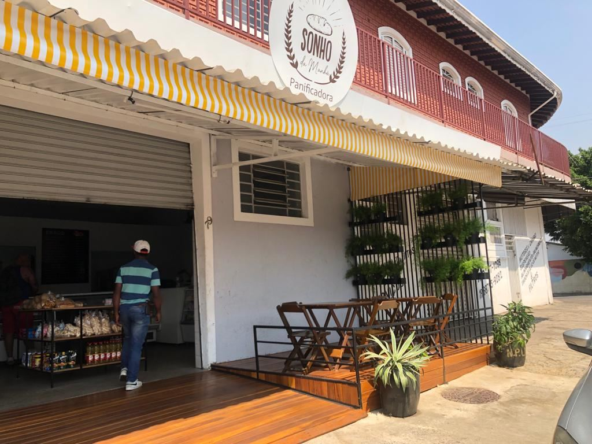
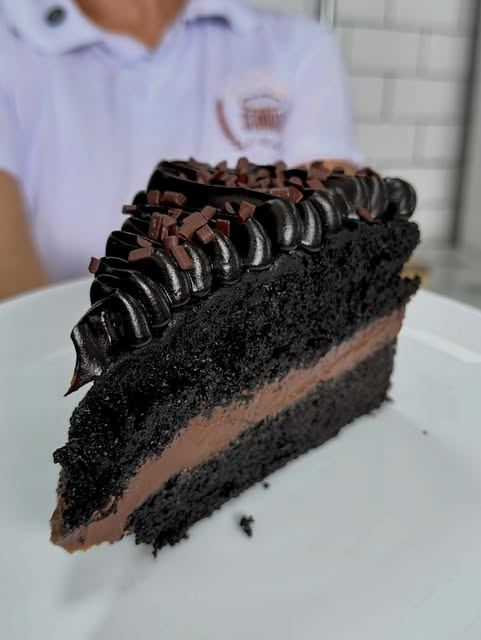
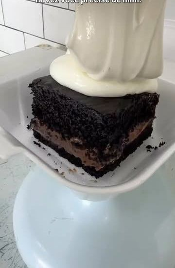
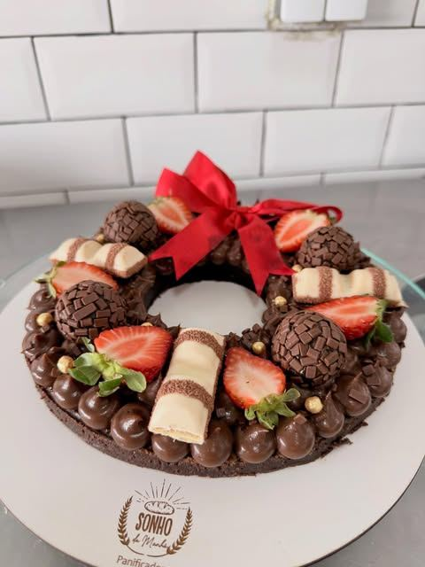

O cardápio que faltava
Do café da manhã ao lanche da tarde
Um cliente pediu no Google: “só falta um cardápio para ver as opções”. Pronto, aqui está.


Encomendas
Bolos decorados para o seu dia
Aniversário, chá, festa infantil ou só vontade de comemorar. A confeitaria da Sonho da Manhã tem um WhatsApp só para encomendas de bolo.
Bolos decoradosBento cakeBolos temáticosTortas e doces
Encomendar pelo WhatsApp

Guirlanda de Natal
Chocolate, morango e trufas para a mesa da ceia. Encomende com antecedência.
Reservar
Chocolate, morango e trufas para a mesa da ceia. Encomende com antecedência.
Fale com a pessoa certa
Um WhatsApp para cada coisa
4,7 · 151 avaliações no Google
O bairro recomenda
Atendimento sensacional, muito educados. Pães, café e outros muito bons.Ewerton · Google
O frango é uma delícia e os doces também. Todos nos recebem com sorriso no rosto.Resumo das avaliações · Google
Comprei um salgado de hambúrguer com cheddar e fiquei impressionado com o quão bom ele é.Paulo · Google
Visite
Abre cedinho todos os dias
| Segunda a sexta | 5h30 às 19h30 |
| Sábado | 6h às 19h30 |
| Domingo | 6h às 12h |
Rua Paschoal Curcio, 79 · Jardim das Bandeiras II, Campinas (SP)
Como chegar